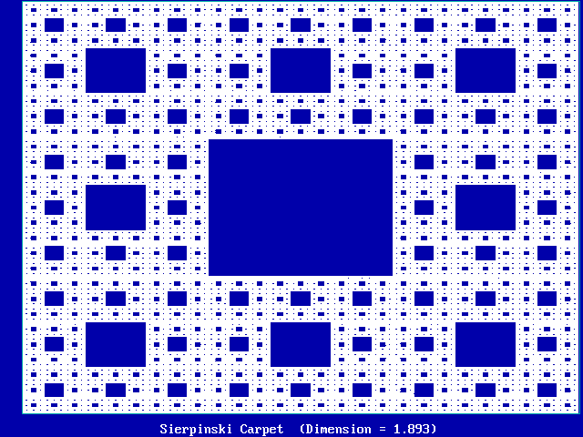
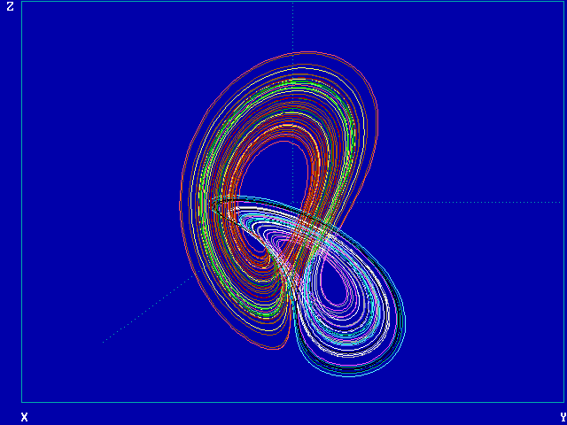
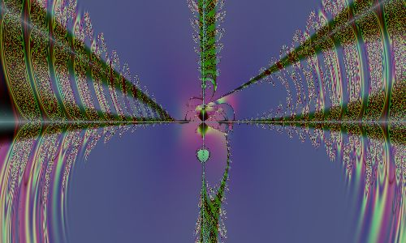

|
Prologue: The Rolling of the Golden Apple In 1776, a year in which political rebels in Philadelphia were proclaiming their independence and freedom, a physicist in Europe was proclaiming total dependence and determinism. According to Pierre-Simon Laplace, if you knew the initial conditions of any situation, you could determine the future far in advance: "The present state of the system of nature is evidently a consequence of what it was in the preceding moment, and if we conceive of an intelligence which at a given instant comprehends all the relations of the entities of this universe, it could state the respective positions, motions, and general effects of all these entities at any time in the past or future." The Laplacian universe is just a giant pool table. If you know where the balls were, and you hit and bank them correctly, the right ball will always go into the intended pocket. Laplace's hubris in his ability (or that of his "intelligence") to forecast the future was completely consistent with the equations and point of view of classical mechanics. Laplace had not encountered nonequilibrium thermodynamics, quantum physics, or chaos. Today some people are frightened by the very notion of chaos. (I have explored this at length in an essay devoted to chaos from a philosophical perspective. But the same is also true with respect to the somewhat related mathematical notion of chaos.) Today there is no justification for a Laplacian point of view. At the beginning of this century, the mathematician Henri Poincaré, who was studying planetary motion, began to get an inkling of the basic problem:
In other words, he began to realize "deterministic" isn’t what it’s often cracked up to be, even leaving aside the possibility of other, nondeterministic systems. An engineer might say to himself: "I know where a system is now. I know the location of this (planet, spaceship, automobile, fulcrum, molecule) almost precisely. Therefore I can predict its position X days in the future with a margin of error precisely related to the error in my initial observations." Yeah. Well, that’s not saying much. The prediction error may explode off to infinity at an exponential rate (read the discussion of Lyapunov exponents later). Even God couldn’t deal with the margin of error, if the system is chaotic. (There is no omniscience. Sorry.) And it gets even worse, if the system is nondeterministic.
The distant future? You’ll know it when you see it, and that’s the first time you’ll have a clue. (This statement will be slightly modified when we discuss a system’s global properties.) I Meet Chaos I first came across something called "dynamical systems" while I was at the University of California at Berkeley. But I hadn't paid much attention to them. I went through Berkeley very fast, and didn't have time to screw around. But when I got to Harvard for grad school, I bought René Thom's book Structural Stability and Morphogenesis, which had just come out in English. The best part of the book was the photos. Consider a crown worn by a king or a princess, in fairy tales or sometimes in real life. Why does a crown look the way it does? Well, a crown is kind of round, so it will fit on the head, and it has spires on the rim, like little triangular hats—but who knows why—and sometimes on the end of the spires are little round balls, jewels or globs of gold. Other than the requirement that it fit on the head, the form of a crown seems kind of arbitrary. But right there in Thom's book was a photo of a steel ball that had been dropped into molten lead, along with the reactive splash of the molten liquid. The lead splash was a perfect crown--a round vertical column rising upward, then branching into triangular spires that get thinner and thinner (and spread out away from the center of the crown) as you approached the tips, but instead of ending in a point, each spire was capped with a spherical blob of lead. In other words, the shape of a crown isn't arbitrary at all: under certain conditions its form occurs spontaneously whenever a sphere is dropped into liquid. So the king’s crown wasn’t created to "symbolize" this or that. The form came first, a natural occurrence, and the interpretation came later. The word "morphogenesis" refers to the forms things take when they grow: bugs grow into a particular shape, as do human organs. I had read a number of books on general systems theory by Ervin Laszlo and Ludwig von Bertalanffy, which discuss the concepts of morphogenesis, so I was familiar with the basic ideas. Frequent references were made to biologist D’Arcy Thompson’s book On Growth and Form. But it was only much later, when I began doing computer art, and chaotically created a more or less perfectly formed ant by iterating a fifth-degree complex equation (that is, an equation containing a variable z raised to the fifth power, z5, where z is a complex number, such as z = .5 + 1.2 sqrt(-1) ), that I really understood the power of the idea. If the shape of ants is arbitrary, then why in the hell do they look like fifth-degree complex equations? Anyway, moving along, in grad school I was looking at the forms taken by asset prices, foreign exchange rates in particular. A foreign exchange rate is the price that one fiat currency trades for another. But I could have been looking at stock prices, interest rates, or commodity prices—the principles are the same. Here the assumption is that the systems generating the prices are nondeterministic (stochastic, random)—but that doesn’t prevent there being hidden form, hidden order, in the shape of probability distributions. Reading up on price distributions, I came across some references to Benoit Mandelbrot. Mandelbrot, an applied mathematician, had made a splash in economics in the early-1960s with some heretical notions of the probabilities involved in price distributions, and had acquired as a disciple Eugene Fama [1] at the University of Chicago. But then Fama abandoned this heresy (for alleged empirical reasons that I find manifestly absurd), and everyone breathed a sigh of relief and returned to the familiar world of least squares, and price distributions that were normal (as they believed) in the social sense as well as the probability sense of a "normal" or Gaussian distribution. In economics, when you deal with prices, you first take logs, and then look at the changes between the logs of prices [2]. The changes between these log prices are what are often referred to as the price distribution. They may, for example, form a Bell-shaped curve around a mean of zero. In that case, the changes between logs would have a normal (Gaussian) distribution, with a mean of zero, and a standard deviation of whatever. (The actual prices themselves would have a lognormal distribution. But that’s not what is meant by "non-normal" in most economic contexts, because the usual reference is to changes in the logs of prices, and not to the actual prices themselves.) At the time I first looked at non-normal distributions, they were very much out of vogue in economics. There was even active hostility to the idea there could be such things in real markets. Many people had their nice set of tools and results that would be threatened (or at least they thought would be threatened) if you changed their probability assumptions. Most people had heard of Mandelbrot, but curiously no one seemed to have the slightest clue as to what the actual details of the issue were. It was like option pricing theory in many ways: it wasn’t taught in economic departments at the time, because none of the professors understood it. I went over to the Harvard Business School library to read Mandelbrot’s early articles. The business school library was better organized than the library at the Economics Department, and it had a better collection of books and journals, and it was extremely close to where I lived on the Charles River in Cambridge. In one of the articles, Mandelbrot said that the ideas therein were first presented to an economic audience in Hendrik Houthakker’s international economics seminar at Harvard. Bingo. I had taken international finance from Houthakker and went to talk to him about Mandelbrot. Houthakker had been a member of Richard Nixon’s Council of Economic Advisors, and was famous for the remark: "[Nixon] had no strong interest in international economic affairs, as shown by an incident recorded on the Watergate tapes where Haldeman comes in and wants to talk about the Italian lira. His response was ‘[expletive deleted] the Italian lira!’" Houthakker told me he had studied the distribution of cotton futures prices and didn’t believe they had a normal distribution. He had given the same data to Mandelbrot. He told me Mandelbrot was back in the U.S. from a sojourn in France, and that he had seen him a few weeks previously, and Mandelbrot had a new book he was showing around. I went over to the Harvard Coop (that’s pronounced "coupe" as in "a two-door coupe", no French accent) and found a copy of Mandelbrot’s book. Great photos! That’s when I learned what a fractal was, and ended up writing two of the three essays in my PhD thesis on fractal price distributions [3]. Fractals led me back into chaos, because maps (graphics) of chaos equations create fractal patterns. |
|
Preliminary Pictures and Poems The easiest way to begin to explain an elephant is to first show someone a picture. You point and say, "Look. Elephant." So here’s a picture of a fractal, something called a Sierpenski carpet [4]:

Notice that it has a solid blue square in the center, with 8 additional smaller squares around the center one.
Each of the 8 smaller squares looks just like the original square. Multiply each side of a smaller square by 3 (increasing the area by 3 x 3 = 9), and you get the original square. Or, doing the reverse, divide each side of the original large square by 3, and you end up with one of the 8 smaller squares. At a scale factor of 3, all the squares look the same (leaving aside the disgarded center square). You get 8 copies of the original square at a scale factor of 3. Later we will see that this defines a fractal dimension of log 8 / log 3 = 1.8927. (I said later. Don’t worry about it now. Just notice that the dimension is not a nice round number like 2 or 3.) Each of the smaller squares can also be divided up the same way: a center blue square surrounded by 8 even smaller squares. So the original 8 small squares can be divided into a total of 64 even smaller squares—each of which will look like the original big square if you multiply its sides by 9. So the fractal dimension is log 64 / log 9 = 1.8927. (You didn’t expect the dimension to change, did you?) In a factal, this process goes on forever. Meanwhile, without realizing it, we have just defined a fractal (or Hausdorff ) dimension. If the number of small squares is N at a scale factor of r, then these two numbers are related by the fractal dimension D: N = rD . Or, taking logs, we have D = log N / log r. The same things keep appearing when we scale by r, because the object we are dealing with has a fractal dimension of D. Here is a poem about fractal fleas:
Okay. So much for a preliminary look at fractals. Let’s take a preliminary look at chaos, by asking what a dynamical system is. Dynamical Systems What is a dynamical system? Here’s one: Johnny grows 2 inches a year. This system explains how Johnny’s height changes over time. Let x(n) be Johnny’s height this year. Let his height next year be written as x(n+1). Then we can write the dynamical system in the form of an equation as: x(n+1) = x(n) + 2. See? Isn’t math simple? If we plug Johnny’s current height of x(n) = 38 inches in the right side of the equation, we get Johnny’s height next year, x(n+1) = 40 inches: x(n+1) = x(n) + 2 = 38 + 2 = 40. Going from the right side of the equation to the left is called an iteration. We can iterate the equation again by plugging Johnny’s new height of 40 inches into the right side of the equation (that is, let x(n)=40), and we get x(n+1) = 42. If we iterate the equation 3 times, we get Johnny’s height in 3 years, namely 44 inches, starting from a height of 38 inches). This is a deterministic dynamical system. If we wanted to make it nondeterministic (stochastic), we could let the model be: Johnny grows 2 inches a year, more or less, and write the equation as: x(n+1) = x(n) + 2 + e where e is a small error term (small relative to 2), and represents a drawing from some probability distribution. Let's return to the original deterministic equation. The original equation, x(n+1) = x(n) + 2, is linear. Linear means you either add variables or constants or multiply variables by constants. The equation z(n+1) = z(n) + 5 y(n) –2 x(n) is linear, for example. But if you multiply variables together, or raise them to a power other than one, the equation (system) is nonlinear. For example, the equation x(n+1) = x(n)2 is nonlinear because x(n) is squared. The equation z = xy is nonlinear because two variables, x and y, are multiplied together. Okay. Enough of this. What is chaos? Here is a picture of chaos. The lines show how a dynamical system (in particular, a Lorenz system) changes over time in three-dimensional space. Notice how the line (path, trajectory) loops around and around, never intersecting itself.

Notice also that the system keeps looping around two general areas, as though it were drawn to them. The points from where a system feels compelled to go in a certain direction are called the basin of attraction. The place it goes to is called the attractor. Here’s an equation whose attractor is a single point, zero: x(n+1) = .9 x(n) . No matter what value you start with for x(n), the next value, x(n+1), is only 90 percent of that. If you keep iterating the equation, the value of x(n+1) approaches zero. Since the attractor in this case is only a single point, it is called a one-point attractor. Some attractors are simple circles or odd-shaped closed loops—like a piece of string with the ends connected. These are called limit cycles. Other attractors, like the Lorenz attractor above, are really weird. Strange. They are called strange attractors. Okay. Now let’s define chaos. What is Chaos? What are the characteristics of chaos? First, chaotic systems are nonlinear and follow trajectories (paths, highways) that end up on non-intersecting loops called strange attractors. Let's begin by understanding what these two terms mean. I am going to repeat some things I said in the previous section. Déjà vu. But, as in the movie The Matrix, déjà vu can communicate useful information. All over again. Classical systems of equations from physics were linear. Linear simply means that outputs are proportional to inputs. Proportional means you either multiply the inputs by constants to get the output, or add a constant to the inputs to get the output, or both. For example, here is a simple linear equation from the capital-asset pricing model used in corporate finance: E(R) = a + b E(Rm). It says the expected return on a stock, E(R), is proportional to the return on the market, E(Rm). The input is E(Rm). You multiply it by b ("beta"), then add a ("alpha") to the result—to get the output E(R). This defines a linear equation. Equations which cannot be obtained by multiplying isolated variables (not raised to any power except the first) by constants, and adding them together, are nonlinear. The equation y = x2 is nonlinear because it uses a power of two: namely, x squared. The equation z = 4xy-10 is nonlinear because a variable x is multipled by a variable y. The equation z = 5+ 3x-4y-10z is linear, because each variable is multiplied only by a constant, and the terms are added together. If we multiply this last equation by 7, it is still linear: 7z = 35 + 21x – 28y – 70z. If we multiply it by the variable y, however, it becomes nonlinear: zy = 5y + 3xy-4y2-10zy. The science of chaos looks for characteristic patterns that appear in complex systems. Unless these patterns were exceedingly simple, like a single equilibrium point ("the equilibrium price of gold is $300"), or a simple closed or oscillatory curve (a circle or a sine wave, for example), the patterns are referred to as strange attractors. Such patterns are traced out by self-organizing systems. Names other than strange attractor may be used in different areas of science. In biology (or sociobiology) one refers to collective patterns of animal (or social) behavior. In Jungian psychology, such patterns may be called archetypes [5]. The main feature of chaos is that simple deterministic systems can generate what appears to be random behavior. Think of what this means. On the good side, if we observe what appears to be complicated, random behavior, perhaps it is being generated by a few deterministic rules. And maybe we can discover what these are. Maybe life isn't so complicated after all. On the bad side, suppose we have a simple deterministic system. We may think we understand it¾ it looks so simple. But it may turn out to have exceedingly complex properties. In any case, chaos tells us that whether a given random-appearing behavior is at basis random or deterministic may be undecidable. Most of us already know this. We may have used random number generators (really pseudo-random number generators) on the computer. The "random" numbers in this case were produced by simple deterministic equations. I’m Sensitive—Don’t Perturb Me Chaotic systems are very sensitive to initial conditions. Suppose we have the following simple system (called a logistic equation) with a single variable, appearing as input, x(n), and output, x(n+1): x(n+1) = 4 x(n) [1-x(n)]. The input is x(n). The output is x(n+1). The system is nonlinear, because if you multiply out the right hand side of the equation, there is an x(n)2 term. So the output is not proportional to the input. Let's play with this system. Let x(n) = .75. The output is 4 (.75) [1- .75] = .75. That is, x(n+1) = .75. If this were an equation describing the price behavior of a market, the market would be in equilibrium, because today’s price (.75) would generate the same price tomorrow. If x(n) and x(n+1) were expectations, they would be self-fulfilling. Given today's price of x(n) = .75, tomorrow's price will be x(n+1) = .75. The value .75 is called a fixed point of the equation, because using it as an input returns it as an output. It stays fixed, and doesn't get transformed into a new number. But, suppose the market starts out at x(0) = .7499. The output is 4 (.7499) [1-.7499] = .7502 = x(1). Now using the previous day's output x(1) = .7502 as the next input, we get as the new output: 4 (.7502) [1-.7502] = .7496 = x(2). And so on. Going from one set of inputs to an output is called an iteration. Then, in the next iteration, the new output value is used as the input value, to get another output value. The first 100 iterations of the logistic equation, starting with x(0) = .7499, are shown in Table 1. Finally, we repeat the entire process, using as our first input x(0) = .74999. These results are also shown in Table 1. Each set of solution paths—x(n), x(n+1), x(n+2), etc.—are called trajectories. Table 1 shows three different trajectories for three different starting values of x(0). Look at iteration number 20. If you started with x(0) = .75, you have x(20) = .75. But if you started with A meteorologist name Lorenz discovered this phenomena in 1963 at MIT [6]. He was rounding off his weather prediction equations at certain intervals from six to three decimals, because his printed output only had three decimals. Suddenly he realized that the entire sequence of later numbers he was getting were different. Starting from two nearby points, the trajectories diverged from each other rapidly. This implied that long-term weather prediction was impossible. He was dealing with chaotic equations. Table 1: First One Hundred Iterations of the Equation
The different solution trajectories of chaotic equations form patterns called strange attractors. If similar patterns appear in the strange attractor at different scales (larger or smaller, governed by some multiplier or scale factor r, as we saw previously), they are said to be fractal. They have a fractal dimension D, governed by the relationship N = rD. Chaos equations like the one here (namely, the logistic equation) generate fractal patterns. Why Chaos? Why chaos? Does it have a physical or biological function? The answer is yes. One role of chaos is the prevention of entrainment. In the old days, marching soldiers used to break step when marching over bridges, because the natural vibratory rate of the bridge might become entrained with the soldiers' steps, and the bridge would become increasingly unstable and collapse. (That is, the bridge would be destroyed due to bad vibes.) Chaos, by contrast, allows individual components to function somewhat independently. A chaotic world economic system is desirable in itself. It prevents the development of an international business cycle, whereby many national economies enter downturns simultaneously. Otherwise national business cycles may become harmonized so that many economies go into recession at the same time. Macroeconomic policy co-ordination through G7 (G8, whatever) meetings, for example, risks the creation of economic entrainment, thereby making the world economy less robust to the absorption of shocks. "A chaotic system with a strange attractor can actually dissipate disturbance much more rapidly. Such systems are highly initial-condition sensitive, so it might seem that they cannot dissipate disturbance at all. But if the system possesses a strange attractor which makes all the trajectories acceptable from the functional point of view, the initial-condition sensitivity provides the most effective mechanism for dissipating disturbance" [7]. In other words, because the system is so sensitive to initial conditions, the initial conditions quickly become unimportant, provided it is the strange attractor itself that delivers the benefits. Ary Goldberger of the Harvard Medical School has argued that a healthy heart is chaotic [8]. This comes from comparing electrocardiograms of normal individuals with heart-attack patients. The ECG’s of healthy patients have complex irregularities, while those about to have a heart attack show much simpler rhythms. How Fast Do Forecasts Go Wrong?—The Lyapunov Exponent The Lyapunov exponent l is a measure of the exponential rate of divergence of neighboring trajectories. We saw that a small change in the initial conditions of the logistic equation (Table 1) resulted in widely divergent trajectories after a few iterations. How fast these trajectories diverge is a measure of our ability to forecast. For a few iterations, the three trajectories of Table 1 look pretty much the same. This suggests that short-term prediction may be possible. A prediction of "x(n+1) = .75", based solely on the first trajectory, starting at x(0) = .75, will serve reasonably well for the other two trajectories also, at least for the first few iterations. But, by iteration 20, the values of x(n+1) are quite different among the three trajectories. This suggests that long-term prediction is impossible. So let's think about the short term. How short is it? How fast do trajectories diverge due to small observational errors, small shocks, or other small differences? That’s what the Lyapunov exponent tells us. Let e denote the error in our initial observation, or the difference in two initial conditions. In Table 1, it could represent the difference between .75 and .7499, or between .75 and .74999. Let R be a distance (plus or minus) around a reference trajectory, and suppose we ask the question: how quickly does a second trajectory¾ which includes the error e ¾ get outside the range R? The answer is a function of the number of steps n, and the Lyapunov exponent l , according to the following equation (where "exp" means the exponential e = 2.7182818…, the basis of the natural logarithms): R = e · exp(l n). For example, it can be shown that the Lyapunov exponent of the logistic equation is l = log 2 = .693147 [9]. So in this instance, we have R = e · exp(.693147 n ). So, let’s do a sample calculation, and compare with the results we got in Table 1. Sample Calculation Using a Lyapunov Exponent In Table 1 we used starting values of .75, .7499, and .74999. Suppose we ask the question, how long (at what value of n) does it take us to get out of the range of +.01 or -.01 from our first (constant) trajectory of x(n) = .75? That is, with a slightly different starting value, how many steps does it take before the system departs from the interval (.74, .76)? In this case the distance R = .01. For the second trajectory, with a starting value of .7499, the change in the initial condition is e = .0001 (that is, e = 75-.7499). Hence, applying the equation R = e · exp(l n), we have .01 = .0001 exp (.693147 n). Solving for n, we get n = 6.64. Looking at Table 1, we see that that for n = 7 (the 7th iteration), the value is x(7) = .762688, and that this is the first value that has gone outside the interval (.74, .76). Similarly, for the third trajectory, with a starting value of .74999, the change in the initial condition is e = .00001 (i.e., . e = 75-.74999). Applying the equation R = e · exp(l n) yields .01 = .00001 exp (.693147 n). Which solves to n = 9.96. Looking at Table 1, we see that for n = 10 (the 10th iteration), we have x(10) = .739691, and this is the first value outside the interval (.74, .76) for this trajectory. In this sample calculation, the system diverges because the Lyapunov exponent is positive. If it were the case the Lyapunov exponent were negative, l < 0, then exp(l n) would get smaller with each step. So it must be the case that l > 0 for the system to be chaotic. Note also that the particular logistic equation, x(n+1) = 4 x(n) [1-x(n)], which we used in Table 1, is a simple equation with only one variable, namely x(n). So it has only one Lyapunov exponent. In general, a system with M variables may have as many as M Lyapunov exponents. In that case, an attractor is chaotic if at least one of its Lyapunov exponents is positive. The Lyapunov exponent for an equation f (x(n)) is the average absolute value of the natural logarithm (log) of its derivative:
For example, the derivative of the right-hand side of the logistic equation x(n+1) = 4 x(n)[1-x(n)] = 4 x(n) – 4 x(n)2 is 4 - 8 x(n) . Thus for the first iteration of the second trajectory in Table 1, where x(n) = .7502, we have |
df /dx(n)| = Table 2: Empirical Calculation of Lyapunov Exponent from
Enough for Now In the next part of this series, we will discuss fractals some more, which will lead directly into economics and finance. In the meantime, here are some exercises for eager students. Exercise 1: Iterate the following system: x(n+1) = 2 x(n) mod 1. [By "mod 1" is meant that only the fractional part of the result is kept. For example, 3.1416 mod 1 = .1416.] Is this system chaotic? Exercise 2: Calculate the Lyapunov exponent for the system in Exercise 1. Suppose you change the initial starting point x(0) by .0001. Calculate, using the Lyapunov exponent, how many steps it takes for the new trajectory to diverge from the previous trajectory by an amount greater than .002. Finally, here is a nice fractal graphic for you to enjoy:

Notes [1] Eugene F. Fama, "Mandelbrot and the Stable Paretian Hypothesis," Journal of Business, 36, 420-429, 1963. [2] If you really want to know why, read J. Aitchison and J.A.C. Brown, The Lognormal Distribution, Cambridge University Press, Cambridge, 1957. [3] J. Orlin Grabbe, Three Essays in International Finance, Department of Economics, Harvard University, 1981. [4] The Sierpinski Carpet graphic and the following one, the Lorentz attractor graphic, were taken from the web site of Clint Sprott: http://sprott.physics.wisc.edu/ . [5] Ernest Lawrence Rossi, "Archetypes as Strange Attractors," Psychological Perspectives, 20(1), The C.G. Jung Institute of Los Angeles, Spring-Summer 1989. [6] E. N. Lorenz, "Deterministic Non-periodic Flow," J. Atmos. Sci., 20, 130-141, 1963. [7] M. Conrad, "What is the Use of Chaos?", in Arun V. Holden, ed., Chaos, Princeton University Press, Princeton, NJ, 1986. [8] Ary L. Goldberger, "Fractal Variability Versus Pathologic Periodicity: Complexity Loss and Stereotypy In Disease," Perspectives in Biology and Medicine, 40, 543-561, Summer 1997. [9] Hans A. Lauwerier, "One-dimensional Iterative Maps," in Arun V. Holden, ed., Chaos, Princeton University Press, Princeton, NJ, 1986. J. Orlin Grabbe is the author of International Financial Markets, and is an internationally recognized derivatives expert. He has recently branched out into cryptology, banking security, and digital cash. His home page is located at http://www.aci.net/kalliste/homepage.html .
|